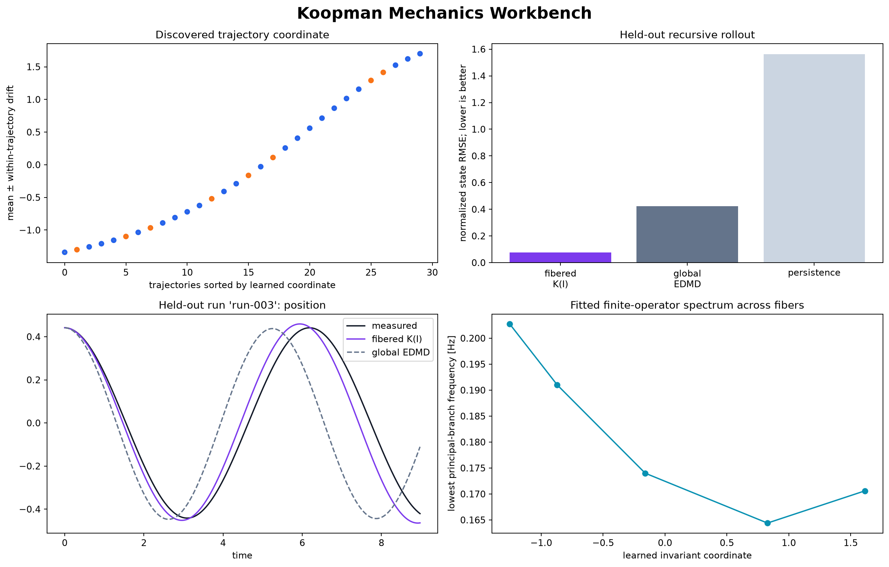

supported_on_held_out_trajectories
Koopman Mechanics Workbench
A label-free candidate invariant organizes complete mechanical trajectories, then indexes a polynomial family of local Koopman operators. Every promoted statement below comes from held-out complete runs.

What the model learned
The neural scalar Iθ(x) was optimized to remain constant inside each trajectory while remaining noncollapsed and smooth between nearby trajectory sets. A transparent observable dictionary ψ(x) then evolves under K(ĉ)=K₀+ĉK₁+ĉ²K₂, where ĉ is the normalized learned coordinate. This is a finite, testable operator family—not a claim of one exact global linearization.
Optional post-training comparison to energy: held-out affine R² 0.8155, absolute rank correlation 1.0000. The reference was excluded from optimization.
Held-out model comparison
| model | normalized rollout RMSE | per-state RMSE in each column's native unit | mean valid time |
|---|---|---|---|
| fibered | 0.07551 | position: 0.06322, velocity: 0.08439 | 8.9750 |
| global_edmd | 0.42400 | position: 0.36622, velocity: 0.46176 | 7.1438 |
| persistence | 1.56358 | position: 1.72271, velocity: 1.13762 | 0.6906 |
Trust boundary
- Training and evaluation are split by complete trajectory IDs.
- The optional reference column never enters invariant or operator training.
- The certificate is specific to this sampling interval, state definition, observed invariant range, and sampled training-state neighborhood.
- The exported model carries this fit verdict and refuses unsupported initial states by default.
- A negative certificate is useful evidence; it means this dictionary and operator family should not be used as a surrogate for the supplied data.
Machine-readable evidence: manifest.json. Loadable model:
model.pt.